library(tidyverse)
cigarettes <- read_csv("../../data/cigarettes.csv")Covariances / Correlations / Inference
Unit B | Chapter 05
Lecture 05b
Developed by Jeffrey M. Girard
So far, we have focused on the mean of one variable
But we are often interested in variable relationships
We can quantify such relationships using correlations
We will expand the idea of correlation into regression during Unit C.
A correlation \((\rho,r)\) quantifies the direction and strength of the linear relationships between two variables
Direction: do the variables change together or opposing?
Strength: how well does one variable predict the other?
A linear relationship is one that can be represented by a straight line
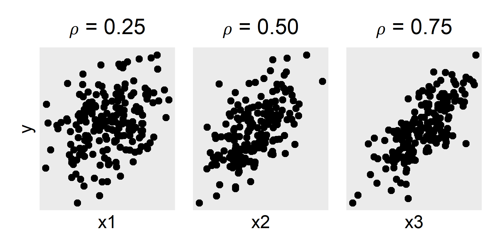
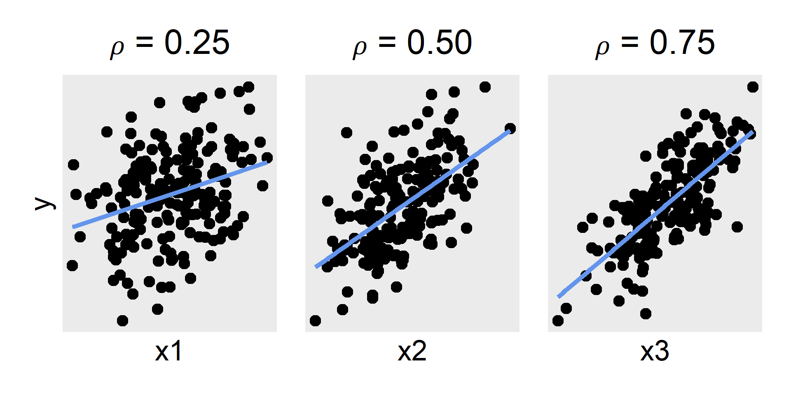
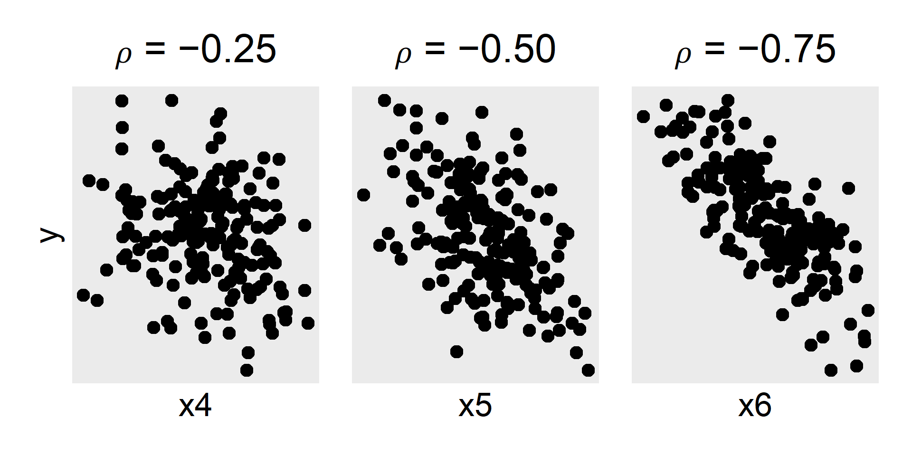
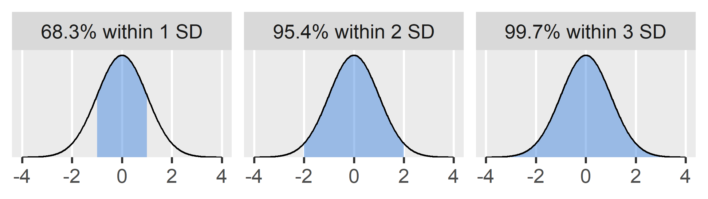
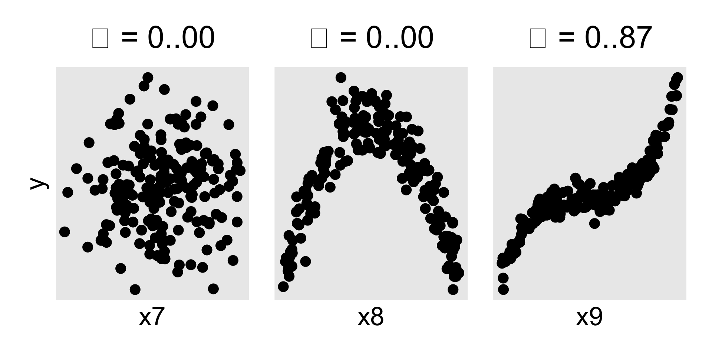
Two variables can also have no relationship (left) or a nonlinear relationship (middle, right)
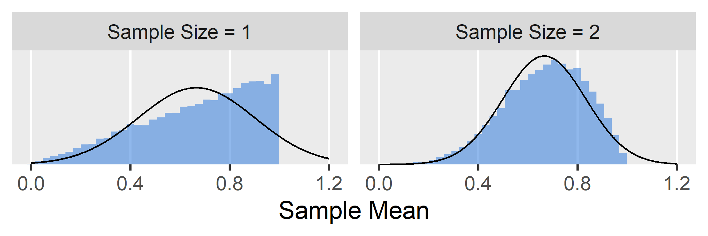
If the line-of-best-fit is horizontal, there is no linear relationship
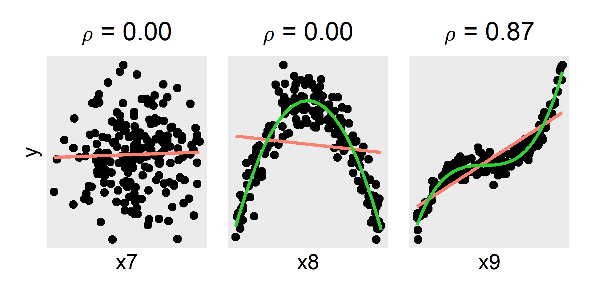
Standard correlations do not count these kinds of nonlinear relationships
\[\text{Var}(x) = \frac{1}{n-1}\sum_{i=1}^n(x_i - \bar{x})(x_i - \bar{x})\]
\[\text{Cov}(x,y) = \frac{1}{n-1}\sum_{i=1}^n(x_i-\bar{x})(y_i-\bar{y})\]
A variable’s variance is equal to its covariance with itself
\[\text{Cov}(x,y) = \frac{1}{n-1}\sum_{i=1}^n(x_i-\bar{x})(y_i-\bar{y})\]
\(\text{Cov}\) is positive when \(x\) and \(y\) vary together
\(\text{Cov}\) is negative when \(x\) and \(y\) vary in opposition
The \(\text{Cov}\) thus quantifies linear relationships…
In general, we standardize something by dividing it by its SD
Here we need to divide by the product of the SDs of \(x\) and \(y\)
\[r_{xy} = \frac{\text{Cov}(x,y)}{s_x s_y}\]
| state | log_packs | log_price | log_income |
|---|---|---|---|
| AL | 4.96213 | 0.20487 | 4.64039 |
| AZ | 4.66312 | 0.16640 | 4.68389 |
| AR | 5.10709 | 0.23406 | 4.59435 |
| CA | 4.50449 | 0.36399 | 4.88147 |
| CT | 4.66983 | 0.32149 | 5.09472 |
| DE | 5.04705 | 0.21929 | 4.87087 |
| DC | 4.65637 | 0.28946 | 5.05960 |
| FL | 4.80081 | 0.28733 | 4.81155 |
| GA | 4.97974 | 0.12826 | 4.73299 |
| ID | 4.74902 | 0.17541 | 4.64307 |
| IL | 4.81445 | 0.24806 | 4.90387 |
| IN | 5.11129 | 0.08992 | 4.72916 |
| IA | 4.80857 | 0.24081 | 4.74211 |
| KS | 4.79263 | 0.21642 | 4.79613 |
| KY | 5.37906 | -0.03260 | 4.64937 |
| LA | 4.98602 | 0.23856 | 4.61461 |
| ME | 4.98722 | 0.29106 | 4.75501 |
| MD | 4.77751 | 0.12575 | 4.94692 |
| MA | 4.73877 | 0.22613 | 4.99998 |
| MI | 4.94744 | 0.23067 | 4.80620 |
| MN | 4.69589 | 0.34297 | 4.81207 |
| MS | 4.93990 | 0.13638 | 4.52938 |
| MO | 5.06430 | 0.08731 | 4.78189 |
| MT | 4.73313 | 0.15303 | 4.70417 |
| NE | 4.77558 | 0.18907 | 4.79671 |
| NV | 4.96642 | 0.32304 | 4.83816 |
| NH | 5.10990 | 0.15852 | 5.00319 |
| NJ | 4.70633 | 0.30901 | 5.10268 |
| NM | 4.58107 | 0.16458 | 4.58202 |
| NY | 4.66496 | 0.34701 | 4.96075 |
| ND | 4.58237 | 0.18197 | 4.69163 |
| OH | 4.97952 | 0.12889 | 4.75875 |
| OK | 4.72720 | 0.19554 | 4.62730 |
| PA | 4.80363 | 0.22784 | 4.83516 |
| RI | 4.84693 | 0.30324 | 4.84670 |
| SC | 5.07801 | 0.07944 | 4.62549 |
| SD | 4.81545 | 0.13139 | 4.67747 |
| TN | 5.04939 | 0.15547 | 4.72525 |
| TX | 4.65398 | 0.28196 | 4.73437 |
| UT | 4.40859 | 0.19260 | 4.55586 |
| VT | 5.08799 | 0.18018 | 4.77578 |
| VA | 4.93065 | 0.11818 | 4.85490 |
| WA | 4.66134 | 0.35053 | 4.85645 |
| WV | 4.82454 | 0.12008 | 4.56859 |
| WI | 4.83026 | 0.22954 | 4.75826 |
| WY | 5.00087 | 0.10029 | 4.71169 |
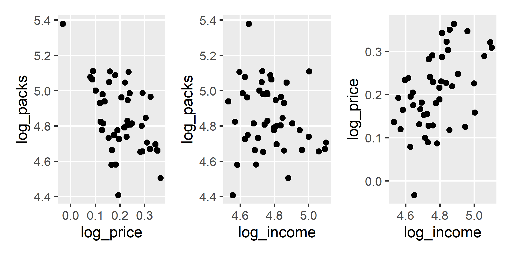
Covariance
\(r=0\) is no relationship, \(r=\pm1\) is a perfect relationship
How should we interpret correlations between \(0\) and \(\pm1\)?
It depends on the context (what is common in your field?)
But here are some heuristics to use as a starting place
| \((0.0,0.1)\) | \([0.1,0.3)\) | \([0.3,0.5)\) | \([0.5,1.0)\) |
|---|---|---|---|
| Negligible | Small | Medium | Large |
This heuristic comes from Cohen (1988, 1992)
All four data sets have the same correlation \((r=.816)\)
But they show very different relationships qualitatively!
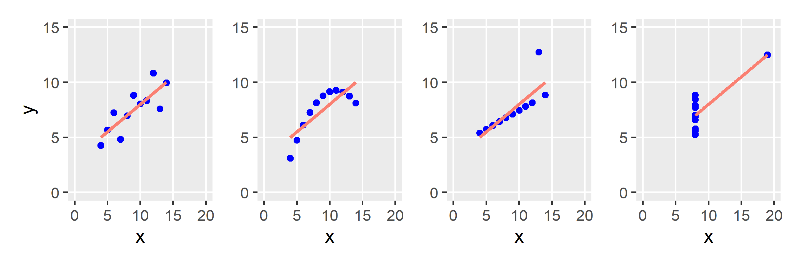
We can square \(r\) to get the coefficient of determination \((r^2)\)
How much variability is explained by the linear relationship?
| \(r\) | \(r^2\) | Explained |
|---|---|---|
| 0.1 | 0.01 | 1% |
| 0.3 | 0.09 | 9% |
| 0.5 | 0.25 | 25% |
| 0.7 | 0.49 | 49% |
| 0.9 | 0.81 | 81% |
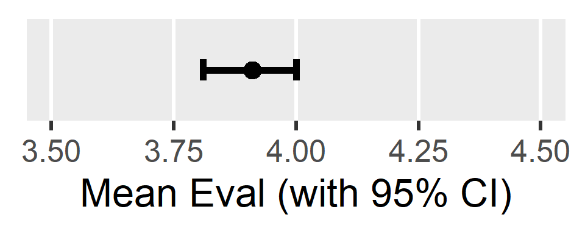
Finding a correlation does not prove any causal story
There are many ways for \(x\) and \(y\) to become correlated
Samples from \(\rho=0.0\)
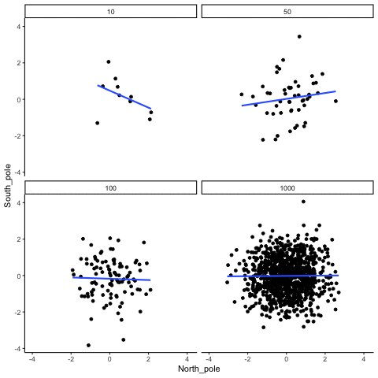
Samples from \(\rho=0.7\)
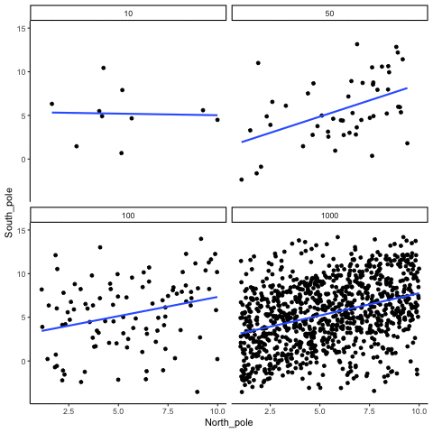
\[ H_0: \rho=0\\ H_1: \rho\neq0 \]
\[t_{obs}=\frac{r\sqrt{n-2}}{\sqrt{1-r^2}}\]
\[t_{obs} \sim t(\textit{df}=n-2, \mu=0, \sigma=1)\]
Because \(t_{obs}\) is more extreme than \(t_{crit}\), we reject \(H_0\)
Thus, we conclude that \(r\neq0\) and specifically that \(r<0\)
Because \(r\) is bounded \([0,1]\), its CI is often asymmetrical
So we need a more complicated procedure to estimate its CI
Transform \(r\) to \(z\),
which is unbounded
Calculate a CI around \(z\),
which is symmetrical
Transform the bounds
of the \(z\) CI back to \(r\)
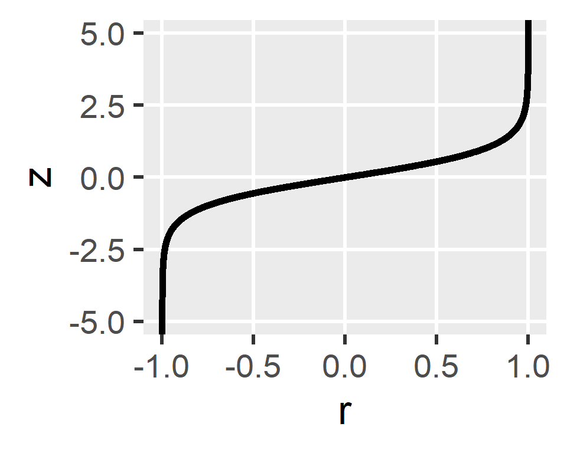
Transform \(r\) to \(z\)
\(z = \frac{1}{2}\ln\left(\frac{1+r}{1-r}\right)\)
Estimate \(z\) CI
\(z \pm \sqrt{\frac{1}{n-3}} \times 1.96\)
Transform CI to \(r\)
\(r=\frac{e^{2z}-1}{e^{2z}+1}\)
r_xy
## [1] -0.5397069
z <- (1 / 2) * log((1 + r_xy) / (1 - r_xy), base = exp(1))
z
## [1] -0.603742
zmult <- qnorm(0.975)
ci_z <- c(lo = z - sqrt(1 / (n - 3)) * zmult, hi = z + sqrt(1 / (n - 3)) * zmult)
ci_z
## lo hi
## -0.9026337 -0.3048503
ci_r <- (exp(2 * ci_z) - 1) / (exp(2 * ci_z) + 1)
ci_r
## lo hi
## -0.7175778 -0.2957450cor.test() function will do all this work for you
correlation() function is more convenientlibrary(easystats)
correlation(cigarettes, select = "log_packs", select2 = "log_price")
## # Correlation Matrix (pearson-method)
##
## Parameter1 | Parameter2 | r | 95% CI | t(44) | p
## --------------------------------------------------------------------
## log_packs | log_price | -0.54 | [-0.72, -0.30] | -4.25 | < .001***
##
## p-value adjustment method: Holm (1979)
## Observations: 46r_all <- correlation(cigarettes)
r_all
## # Correlation Matrix (pearson-method)
##
## Parameter1 | Parameter2 | r | 95% CI | t(44) | p
## --------------------------------------------------------------------
## log_packs | log_price | -0.54 | [-0.72, -0.30] | -4.25 | < .001***
## log_packs | log_income | -0.17 | [-0.44, 0.13] | -1.14 | 0.262
## log_price | log_income | 0.49 | [ 0.24, 0.68] | 3.75 | 0.001**
##
## p-value adjustment method: Holm (1979)
## Observations: 46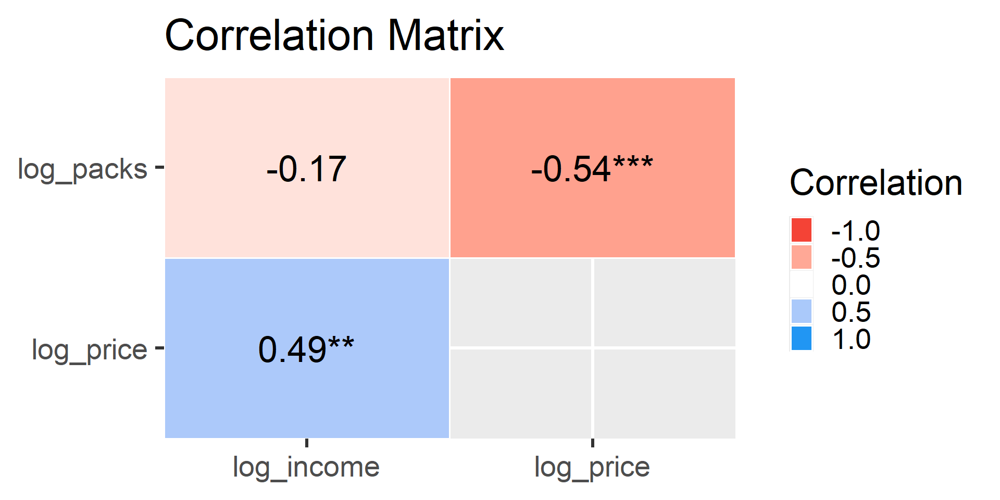